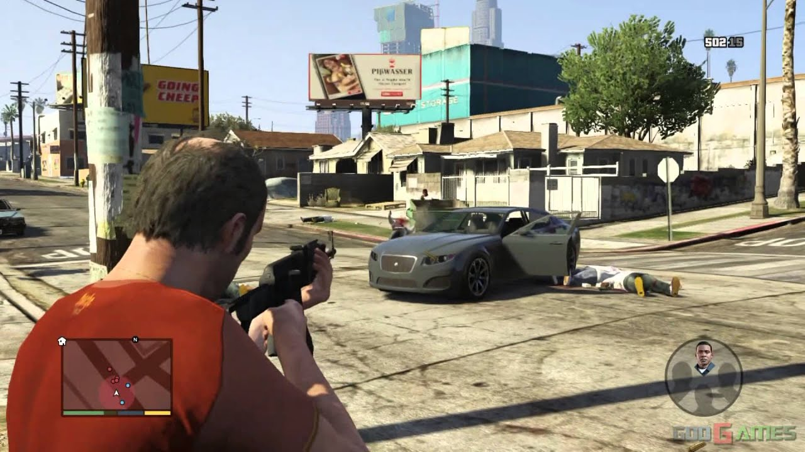
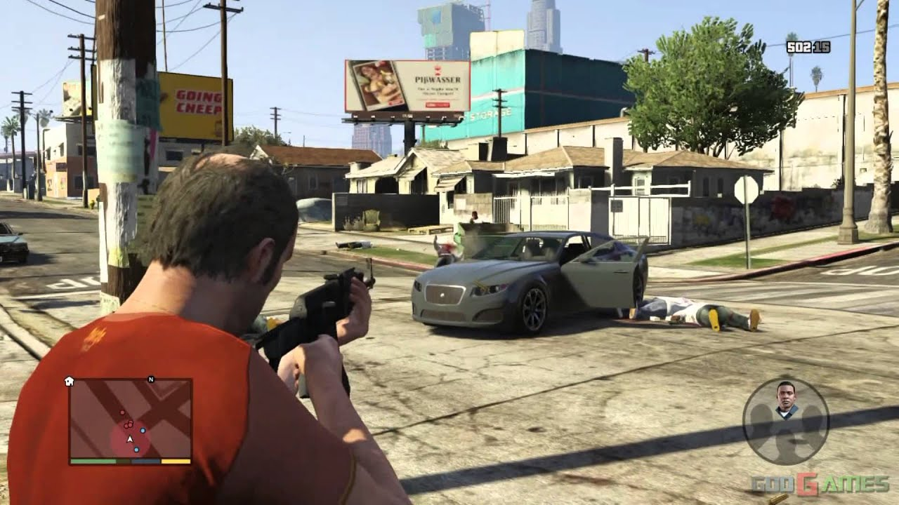

2013
The Last of Us ★
★★★★★ 95%
Released On: June 14, 2013
Summary:
Twenty years after a pandemic radically transformed known civilization, infected
humans run amuck and survivors kill one another for sustenance and weapons - literally whatever they
can get their hands on. Joel, a salty survivor, is hired to smuggle a fourteen-year-old girl, Ellie,
out of a rough military quarantine, but what begins as a simple job quickly turns into a brutal
journey
across the country.
"Flawless in its ambition and almost perfect in its execution. A brave and remarkable game quite unlike any other."
- GamingXP, Sep 16, 2013
Animal Crossing: New Leaf ♥︎
★★★★☆ 88%
Released On: June 9, 2013
Summary:
There are no points or levels, just a myriad of sights and sounds, places and
activities...all ready to explore. Spend your time passing new ordinances—or going fishing. Hang out
at a coffee shop or visit a tropical island. It's up to you. Your game is what you make of it—and
personalizing your world is part of the fun. Create cool patterns for clothing or furniture, build
new structures in your town, design gardens and museum displays, and so much more. Time passes in
the world of Animal Crossing just as it does in real life. Celebrate holidays and see the seasons
change. Meet new visitors or get gifts from your neighbors.
"Animal Crossing: New Leaf is excellent for meditation, coffee breaks, grinding, goofing around, self-expression and, naturally, having loads of fun."
- Pelit, Oct 7, 2013
2014
Grand Theft Auto V ★
★★★★★ 97%
Released On: November 18, 2014
Summary:
Los Santos is a vast, sun-soaked metropolis full of self-help gurus, starlets and
once-important, formerly-known-as celebrities. The city was once the envy of the Western world, but
is now struggling to stay afloat in an era of economic uncertainty and reality TV. Amidst the chaos,
three unique criminals plot their own chances of survival and success: Franklin, a former street
gangster in search of real opportunities and serious cheddar; Michael, a professional ex-con whose
retirement is a lot less rosy than he hoped it would be; and Trevor, a violent maniac driven by the
chance of a cheap high and the next big score. Quickly running out of options, the crew risks it all
in a sequence of daring and dangerous heists that could set them up for life.
 

"The definitive version of what is quite possibly the greatest game ever made. It's worth reliving."
- Games Master UK, Jan 29, 2015
Super Smash Bros
★★★★★ 92%
Released On: November 21, 2014
Summary:
Return to a world of exciting battles with Super Smash Bros. as you fight your
way through a host of fan-favorite opponents. Make your way through memorable stages inspired by the
most notorious classic Nintendo games. Challenge a myriad of familiar faces to battle, including
Mario, Link, Samus and Pikachu, or take on new contenders, such as Mega Man, Little Mac and
Palutena, the Goddess of Light from the Kid Icarus games. Leap into battle as your own personalized
Mii characters. Dive into a thrilling new mode, exclusive to the Nintendo 3DS, Smash Run. Fight solo
through a battlefield of enemies, and snatch up their dropped powerups before the clock runs out —
and the real battle begins. Customize your fighter for when you're playing locally or online.
Experience all the stunning beauty of the Super Smash Bros. world rendered in immersive 3D.
Challenge family and friends locally or online, or seek out new competition from around the globe in
online For Fun or For Glory matches.
"A sprawling ode to Nintendo and punching, this'll keep fans scrapping for years to come."
- Games Master UK, Jan 31, 2015
2015
Metal Gear Solid V: The Phantom Pain ★
★★★★★ 93%
Released On: September 1, 2015
Summary:
Following the prologue METAL GEAR SOLID V: GROUND ZEROES, METAL GEAR SOLID V: THE
PHANTOM PAIN concludes the METAL GEAR SOLID V experience by following the story of the protagonist
of the series, Big Boss (a.k.a. Snake). The METAL GEAR SOLID V experience is Creator and Director
Hideo Kojima's first time incorporating open world gameplay to the groundbreaking METAL GEAR
franchise.
"If this is where Kojima does finally leave the series he created, it will be a bittersweet send-off, both for Big Boss and one of gaming's most intriguing auteurs."
- Polygon, Dec 3, 2015
Super Smash Bros
★★★★★ 92%
Released On: November 21, 2014
Summary:
Return to a world of exciting battles with Super Smash Bros. as you fight your
way through a host of fan-favorite opponents. Make your way through memorable stages inspired by the
most notorious classic Nintendo games. Challenge a myriad of familiar faces to battle, including
Mario, Link, Samus and Pikachu, or take on new contenders, such as Mega Man, Little Mac and
Palutena, the Goddess of Light from the Kid Icarus games. Leap into battle as your own personalized
Mii characters. Dive into a thrilling new mode, exclusive to the Nintendo 3DS, Smash Run. Fight solo
through a battlefield of enemies, and snatch up their dropped powerups before the clock runs out —
and the real battle begins. Customize your fighter for when you're playing locally or online.
Experience all the stunning beauty of the Super Smash Bros. world rendered in immersive 3D.
Challenge family and friends locally or online, or seek out new competition from around the globe in
online For Fun or For Glory matches.
"A sprawling ode to Nintendo and punching, this'll keep fans scrapping for years to come."
- Games Master UK, Jan 31, 2015